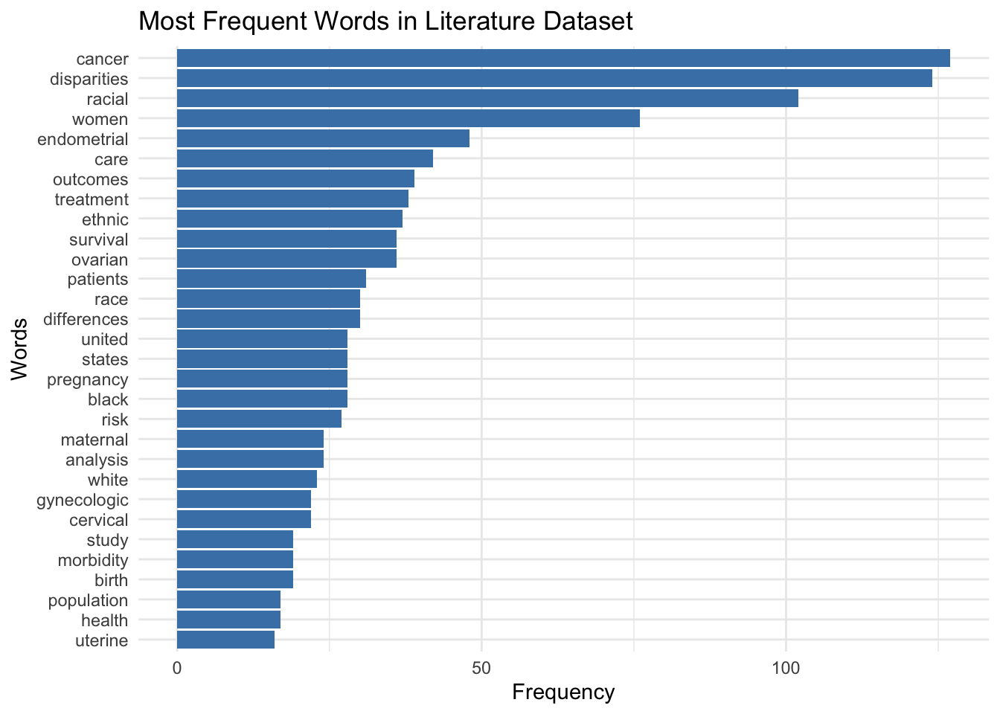
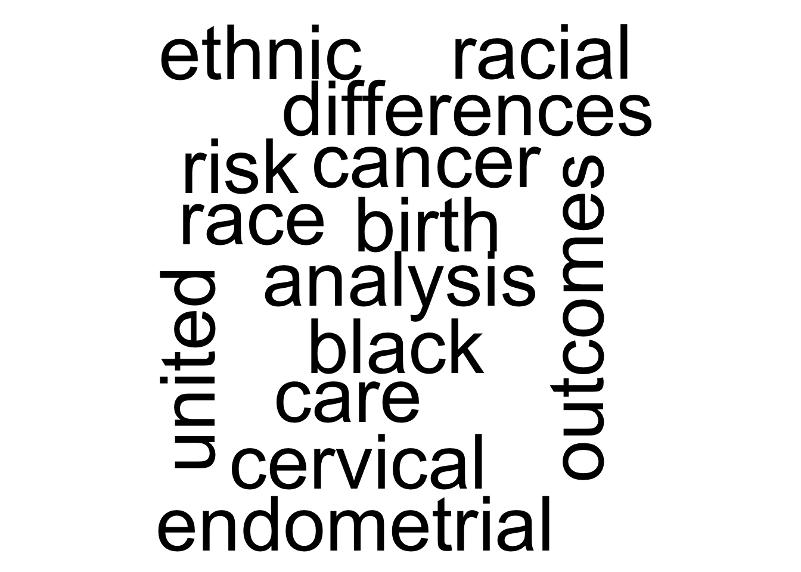

# A tibble: 5 × 6
title abstract keywords newtitle new_keyword word_count
<chr> <chr> <chr> <chr> <chr> <int>
1 A single baseline ultrasoun… How wel… disease… A singl… disease pr… 27
2 Impact of racial disparitie… We asse… Gynecol… Impact … Gynecologi… 27
3 Trends of racial disparitie… To dete… African… Trends … African Co… 26
4 Disparities in cervical can… During … Cancer … Dispari… Cancer sta… 26
5 Black race associated with … To eval… Frozen … Black r… Frozen emb… 26
The highest number of words in a title is 27 words
Let’s check the number of characters for the 3 top longest newtitle with the longest title.
# A tibble: 3 × 6
title abstract keywords newtitle new_keyword char_count
<chr> <chr> <chr> <chr> <chr> <int>
1 Black race associated with … To eval… Frozen … Black r… Frozen emb… 171
2 Systematic Next Generation … Both in… African… Systema… African Am… 165
3 A single baseline ultrasoun… How wel… disease… A singl… disease pr… 163
The highest number of characters in a title is 171 characters.
Now, let’s tokenize the newtitle that I have cleaned up.
new_data1 <- filter1 |>mutate(line =row_number()) |>#assigns index or number to each by starting from 1. unnest_tokens(word, newtitle, token ="words") print(new_data1)
# A tibble: 4,318 × 6
title abstract keywords new_keyword line word
<chr> <chr> <chr> <chr> <int> <chr>
1 Desired Sterilization Procedure at… To eval… Adult; … Adult Cesa… 1 desi…
2 Desired Sterilization Procedure at… To eval… Adult; … Adult Cesa… 1 ster…
3 Desired Sterilization Procedure at… To eval… Adult; … Adult Cesa… 1 proc…
4 Desired Sterilization Procedure at… To eval… Adult; … Adult Cesa… 1 at
5 Desired Sterilization Procedure at… To eval… Adult; … Adult Cesa… 1 the
6 Desired Sterilization Procedure at… To eval… Adult; … Adult Cesa… 1 time
7 Desired Sterilization Procedure at… To eval… Adult; … Adult Cesa… 1 of
8 Desired Sterilization Procedure at… To eval… Adult; … Adult Cesa… 1 cesa…
9 Desired Sterilization Procedure at… To eval… Adult; … Adult Cesa… 1 deli…
10 Desired Sterilization Procedure at… To eval… Adult; … Adult Cesa… 1 acco…
# ℹ 4,308 more rows
I also tokenized the keywords variable so that I can use it later.
new_data2 <- filter1 |>mutate(line =row_number()) |>#assigns index or number to each by starting from 1. unnest_tokens(word, new_keyword, token ="words")print(new_data2)
# A tibble: 10,595 × 6
title abstract keywords newtitle line word
<chr> <chr> <chr> <chr> <int> <chr>
1 Desired Sterilization Procedure at th… To eval… Adult; … Desired… 1 adult
2 Desired Sterilization Procedure at th… To eval… Adult; … Desired… 1 cesa…
3 Desired Sterilization Procedure at th… To eval… Adult; … Desired… 1 sect…
4 Desired Sterilization Procedure at th… To eval… Adult; … Desired… 1 coho…
5 Desired Sterilization Procedure at th… To eval… Adult; … Desired… 1 stud…
6 Desired Sterilization Procedure at th… To eval… Adult; … Desired… 1 fema…
7 Desired Sterilization Procedure at th… To eval… Adult; … Desired… 1 heal…
8 Desired Sterilization Procedure at th… To eval… Adult; … Desired… 1 disp…
9 Desired Sterilization Procedure at th… To eval… Adult; … Desired… 1 huma…
10 Desired Sterilization Procedure at th… To eval… Adult; … Desired… 1 insu…
# ℹ 10,585 more rows
After tokenizing the newtitle, the total rows I have are more 4 thounsands, so next I want to remove some of the stop_words.
Joining with `by = join_by(word)`

This is a horizontal bar chart showing the frequency of each word, where the longest bar represent the most common word, and the shortest bar represents most least common word. On the y-axis is words, containing 32 words, while on the x-axis the frequency of each word, ranging from 1 time to approximately 130 times. Overall, the distribution of this bar chart shows a significant emphasis on oncology and healthcare disparities.
Next let’s explore different sentiment lexicons
Implement sentiment analysis with the BING and titles
Joining with `by = join_by(word)`
# A tibble: 3 × 3
word n sentiment
<chr> <int> <chr>
1 cancer 127 negative
2 survival 36 positive
3 risk 27 negative
This faceted horizontal bar chart illustrates word frequencies categorized by sentiment in academic literature. Words associated with negative sentiment, including, cancer, risk, severe, appear in the left panel, while words associated with positive sentiment, survival, appear in the right panel. Bar lengths indicate relative word frequencies. The word that contributes the most to the sentiment scores for these titles is survival. All three terms—risk, cancer, and survival—show a maximum relative frequency of\(1.00\) within their respective sentiment categories.
Second, let’s check word frequency using wordcloud.
Joining with `by = join_by(word)`

This word cloud visualizes the most frequently occurring terms in the literature dataset. The size of each word represents its frequency, making the most dominant themes immediately apparent. The largest words—including analysis, birth, black, cancer, and, risk, indicate that these are the most prominent terms in the text. Words are arranged in both horizontal and vertical orientations to create a compact thematic summary.
Let’s do some N-gram analysis
# A tibble: 95,251 × 4
title keywords linenumber bigram
<chr> <chr> <int> <chr>
1 Desired Sterilization Procedure at the Time of Ce… Adult; … 1 to ev…
2 Desired Sterilization Procedure at the Time of Ce… Adult; … 1 evalu…
3 Desired Sterilization Procedure at the Time of Ce… Adult; … 1 wheth…
4 Desired Sterilization Procedure at the Time of Ce… Adult; … 1 women…
5 Desired Sterilization Procedure at the Time of Ce… Adult; … 1 with …
6 Desired Sterilization Procedure at the Time of Ce… Adult; … 1 medic…
7 Desired Sterilization Procedure at the Time of Ce… Adult; … 1 are l…
8 Desired Sterilization Procedure at the Time of Ce… Adult; … 1 less …
9 Desired Sterilization Procedure at the Time of Ce… Adult; … 1 likel…
10 Desired Sterilization Procedure at the Time of Ce… Adult; … 1 than …
# ℹ 95,241 more rows
Check the most common bigram
# A tibble: 43,462 × 2
bigram n
<chr> <int>
1 95 ci 502
2 in the 384
3 non hispanic 330
4 white women 289
5 black women 277
6 compared with 273
7 associated with 272
8 p lt 267
9 confidence interval 262
10 95 confidence 255
# ℹ 43,452 more rows
The bigram “95 ci” occurs in a total of 502 titles.
LET’S REMOVE SOME OF THE STOP WORDS FROM THE BIGRAM COLUMN
# A tibble: 35,241 × 5
title keywords linenumber firstword secondword
<chr> <chr> <int> <chr> <chr>
1 Desired Sterilization Procedure at … Adult; … 1 privately insured
2 Desired Sterilization Procedure at … Adult; … 1 insured counterpa…
3 Desired Sterilization Procedure at … Adult; … 1 desired steriliza…
4 Desired Sterilization Procedure at … Adult; … 1 steriliz… procedure
5 Desired Sterilization Procedure at … Adult; … 1 cesarean delivery
6 Desired Sterilization Procedure at … Adult; … 1 secondary analysis
7 Desired Sterilization Procedure at … Adult; … 1 single center
8 Desired Sterilization Procedure at … Adult; … 1 center retrospec…
9 Desired Sterilization Procedure at … Adult; … 1 retrospe… cohort
10 Desired Sterilization Procedure at … Adult; … 1 cohort examining
# ℹ 35,231 more rows
CREATING A NETWORK GRAPH FROM THE N-GRAM
This is a directed network graph illustrating common word pairs (bigrams) within the dataset. Each green node represents a unique word, while the arrows indicate the sequence and directional relationship of phrases appearing together in the text. The density of the arrows reveals thematic clusters, most notably a central focus on racial and ethnic disparities and a secondary cluster focused on maternal health and obstetric outcomes. Larger connections represent more frequent word pairings.